★三角洲特种部队吧★ 资源下载导航
以下为导航贴目录，您可选择对应的板块快速前往您想到达的位置
1.更新更多快链链接
250505 更新即为导航贴最终更新，此后的任何更新仅为资源上传或维护
此项目在 23.11.09 立项并于 25.05.05 正式进入封存阶段。其他时间将不再进行大范围更新
点这里，获取三特吧更新第一手新鲜资讯
本文档为三角洲特种部队吧资源帖 ★三角洲特种部队吧★ 资源下载导航 的备份与更新平台，如果您在贴吧遇到某一楼层资源失效或更新，可在本文档内的对应位置尝试寻找补充或更新内容
如果您对导航贴有任何的意见或建议，或发现内容有误资源失效等情况，请在文档/贴吧内导航贴下方留言
转载请注明来自百度贴吧三角洲特种部队吧
文档作者：一秒超酷.
文档最后大更新时间：2025.05.05
文档最后小更新时间：2025.12.05
本贴一切内容来源于网络。本吧从不鼓励也不支持玩家使用盗版进行游戏，因为盗版游戏存在各种各样的问题，无法获得官方的支持与维护等原因。而正版游戏拥有官方的支持与维护，并且还有自带的售后，方便您开心游玩。本贴存在的目的也仅仅只是将目前的贴吧内的资源进行汇总整合，作为信息传递的目的，为方便您了解并购入正版游戏做出参考和抉择。毕竟要想全款拿下所有游戏还是得要好几张的，因而还请您在测试完游戏后自觉忘记并及时删除下载的资源，否则由此造成的一切后果将由您自行承担。支持正版游戏，从你我做起 |
【最新游戏动态】《三角洲特种部队黑鹰坠落》贴吧汉化版本已在贴吧群内开展测试
详情请访问板块 6.6 查看
https://df.qq.com/cp/a20240906main/newsdetail.html?id=5876977506899455493
https://novahq.net/forum/showthread.php?t=63016
1.3【正版游戏】您可以在 Steam 商店支持并获取正版游戏
如何挑选适合适合您的游戏平台购买游戏：https://tieba.baidu.com/p/6166669618
Steam 商店链接：https://store.steampowered.com/search/?term=Novalogic&ndl=1
1.4【您在贴吧】凡是在本吧发帖，无论是否关注本吧，都需遵守贴吧协议和本吧吧规
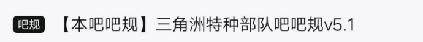
1.5【一图文速览】三角洲特种部队吧提供的主要游戏时间线与部分 IGN 评分
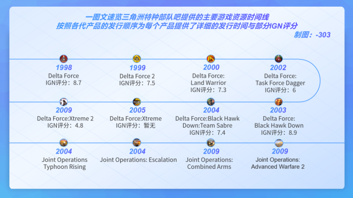
1.6【速览】《三角洲行动-黑鹰坠落》关卡同原版 Delta Force:Black Hawk Down 关卡与电影《黑鹰坠落》剧情对照
章节一：突袭――――SPBHD 15: Irene
游戏为原版第 11 关&三角洲部队任务 6：艾琳。游戏大致剧情片段为从机场出发前往奥林匹克建筑抓捕并等待悍马车队
史实为 15:42 左右载有三角洲突击队的 MH-6 抵达目标。这其中沙尘过大导致三角洲小队错误判断目标建筑从而错误突袭了一处平民建筑，但随后他们找到了目标建筑，并展开行动
章节二：导火索――――SPBHD 15: Irene
游戏为原版第 11 关&三角洲部队任务 6：艾琳。游戏大致剧情片段为离开悍马车队前往支援 Chalk 4 → Chalk 2 → Chalk 1，并在 Chalk 1 小队建立防守线时，高空支援的 Super 61 被敌方 RPG 击中坠落
史实为 史崔克车队 并非由三角洲小队步行引导，而是由地面部队一支直接登车并由一组直升机在空中掩护。运送中途，机枪手皮拉被击中头部，成为当天美军第一个阵亡士兵。16:20 Super61 在为车队提供狙击掩护时被 RPG-7 击落，坠毁在饭店以北五个街区外，两名飞行员当场死亡，两名机组重伤
章节三：折翼之地――――SPBHD 16: Lost Convoy
游戏为原版第 12 关&三角洲部队任务 7：迷途车队。游戏大致剧情片段为从离开车队至在 Super 61 坠机点建立防守线等待 C-SAR 到达
史实为坠机发生后，地面部队分成多组向坠机点前进。第一批游骑兵抵达坠机点后，后续的游骑兵和三角洲小队则被激烈的交火阻滞在街巷中。与此同时 Star 41 的 MH-6 直升机在 Super61 坠机点附近降落并成功将幸存的两人带离现场送回基地。直到 16:28 由 Super 68 抵达第一坠机点上空，15 人的 CSAR 小组 快速索降到坠机现场。索降期间，一发火箭弹击伤了直升机，不过 Super 68 还是坚持完成了索降并成功飞回了基地维修
章节四：迷失的车队――――SPBHD 16: Lost Convoy
游戏为原版第 12 关&三角洲部队任务 7：迷途车队。游戏大致剧情片段为从奥林匹克饭店出发至放下 5-1 小队的车战过程
史实为 16:26 麦肯奈特车队出发，车队出发即被 SNA 围攻，并且时常遭遇 SNA 路障布置导致不停绕路。直到 16:35 车队错误转向在城市街道上迷路。16:54 指挥部最终决定让麦肯奈特车队放弃对第一坠机点搜索，向基地突围。麦肯奈特车队后来被称作 迷失车队（Lost Convoy），一共有 5 人战死，伤员过半
章节五：义无反顾――――SPBHD 17: Valiant Soldiers
游戏为原版第 13 关&三角洲部队任务 8：勇敢的士兵。需要注意本关并未涉及到原官方剧情，最相关的剧情为 Novahq.net 上玩家自创的三方图：Durant Crash Site 需要注意此关无法正常完成任务。剧情片段为玩家坚守至 Super 64 坠机点直至被无穷的敌人所淹没
史实为 16:40，民兵头目 Mo'alim 带队用 RPG 击落了 Super 64 直升机，导致其在目标建筑西南约一英里处坠毁。在 Super 62 上待命的 3 名三角洲狙击手――加里戈登、兰迪舒加特、布拉德哈林斯重复申请希望在 Super 64 坠机点机降保护伤员，最终戈登和舒加特前往 Super 64 坠机点和伤员一同建立防守线。Super 62 升空后用两侧的 M134 机枪压制试图冲破坠机点的民兵，但十分钟后被一发火箭弹击中，只得飞到新港迫降并被 Super 68 所救。失去了空中支援，且增援车队几经尝试无法抵达坠机点，两名狙击手寡不敌众，弹药几乎耗尽。戈登第一个中弹阵亡后，舒加特取回了戈登的 CAR-15 交给杜兰特。舒加特回到直升机中战斗至死，现场被占。三名重伤的幸存者也被杀，带队伏击 Super 64 的 Mo'alim 赶来救下了杜兰特，作为人质押走
章节六：暗夜行者――――SPBHD 18: Last Stand
游戏为原版第 14 关&三角洲部队任务 9：最后的等待。游戏大致剧情片段为从大路找寻到迫击炮阵地并炸毁迫击炮，等待车队的一小段任务
剧情片段对应电影为玩家会合 埃文斯曼 小队后顶住敌方火力放置红外线照明灯引导小鸟直升机扫射敌方，并坚守等待联合救援车队到来
史实为第一坠机点的 99 名美军，分散在 4 栋建筑里固守待援，还有一战之力的伤员也倚靠在窗边举枪射击。在此期间依靠 Super 66 的补给和 160 特战航空团 AH-6J 的打击。不过现实中游骑兵并没有像电影里一样把信标弹冒着枪林弹雨扔到目标建筑，而是由布雷中士在游骑兵的阵地外拉了一圈标记，然后由小鸟向一切非标记目标扫射。也只有依靠 AH-6J 的打击才能帮助他们守住防线。直到第二天早上 1:55，主力车队冲进战区，抵达了被困部队驻守的第一坠机点
章节七：长跑――――SPBHD 19: Mogadishu Mile
游戏为原版第 15 关&三角洲部队任务 10：摩加迪沙长跑。游戏剧情片段对应原版游戏全流程
史实为第二天早上 5:30，整个部队在离开 Super 61 坠机现场时，一群游骑兵和三角洲队员发现装载了重伤员和死者遗体后，车里已经没有空间留给他们了。他们被迫步行离开城市区，同时还要为车队殿后，直到到达与巴基斯坦坦克的汇合点后才坐上装甲车车顶。这段长跑后来被称作 摩加迪沙英里 Mogadishu Mile，数人受伤，但无人阵亡
2.1【历史世界观】恢复希望行动始末（作者来自知乎用户：北空孤雁）
《黑鹰坠落》与索马里维和（上）――恢复希望行动建立原因：https://zhuanlan.zhihu.com/p/510170070
《黑鹰坠落》与索马里维和（中）――惨痛的摩加迪沙之战：https://zhuanlan.zhihu.com/p/511358368
《黑鹰坠落》与索马里维和（下）――摩加迪沙之战的后续：https://zhuanlan.zhihu.com/p/512538683
2.2【游戏世界观】DF 全系列剧情完美汉化手册（汉化作者：飞越无尽暗空）
完美翻译版游戏剧情手册 1（DF1，DF2）：https://pan.baidu.com/s/1jGFVGMi
完美翻译版游戏剧情手册 2（DFLW，DFTFD）：https://pan.baidu.com/s/1kTFnHu3
完美翻译版游戏剧情手册 3（DFBHD，BHDTS）：https://pan.baidu.com/s/1qW2Sy9Q
完美翻译版游戏剧情手册 4（DFX，DFX2）：https://pan.baidu.com/s/1mg0sMec
我们在这个版块汇总整理了一些就目前贴吧内吧友和群友所提出的，存在的一些共性问题和相应的解决方案。在安装游戏前或在游玩过程中出现的问题，您可以在此板块内查看对应问题的对应解决方案。常见且高发的问题已经做出特别标记。为了减少您出现问题找寻方案的时间，建议您将下载好后的游戏安装包保留在电脑上一段时间。某些问题只需要重新解压安装游戏即可完美解决 需要注意本吧内所提供的资源均可以在未对系统进行任何处理过的原版系统下完整运行，如果您的系统为精简版或其他魔改版而造成或引起的游戏错误，请您自行重新安装系统，勿在本贴内跟帖回复 如果这个解决方案中未涉及到您所遭遇的问题，请您在贴吧发布主题帖来询问，并尽可能详细描述所遇到的故障问题，以便我们参考解决 注意，某些问题对于 Windows 11 25H2+（26200+） 版本的测试情况未知，欢迎您向我们反馈 DF 在这些操作系统版本的运行情况 标注★的问题出现较为高频。您可以仔细查看这些问题以及对应的解决方案 |
★Q1：在安装/启动 游戏程序 或 MOD 程序 一闪而过并报错，桌面有 Windows Defender 等杀毒软件提示病毒等弹窗
解压游戏或安装 MOD 之前，请您先退出 Windows Defender 等杀毒软件或临时关闭它们的查杀功能。如果不方便关闭请将需要安装的内容加入至杀毒软件的白名单中。某些关键游戏组件可能会被这些软件拦截并删除，从而导致游戏无法正常运行甚至损坏
★Q2：应用程序错误，弹窗表现为应用程序无法正常启动（ 0xc0000022 ）。请单击"确定"关闭应用程序
如果下载游戏后您的游戏资源报错，且系统为 Windows 10 以上，提示为 0xc0000022 的错误代码。请您打开 控制面板 。选择 程序 后打开 启用或关闭 Windows 功能 。下拉找到 旧版组件 ― DirectPlay 并勾选确认，等待操作系统添加完成 DirectPlay 功能后，重新启动报错的游戏再次运行。如果上述方法执行后仍出现错误，则有可能下载过程中资源已经损坏，请重新尝试下载或在本贴内找寻替代的版本下载
如果您的电脑在启用旧版组件过程中报错，则需要以管理员身份启动 命令提示符 / Windows PowerShell / Windows 终端，并在联网状态分条执行下列步骤
步骤 1：扫描全部系统文件并和官方系统文件对比指令：DISM /Online /Cleanup-image /Scanhealth
步骤 2：如果步骤 1 提示存在问题，则跳过步骤 2，直接执行步骤 3；否则，请继续执行指令：sfc /scannow
若步骤 2 未发现问题。此时可以直接结束，不再执行后续步骤 3，4，5 。此时，请您重新下载相关资源包或更换游戏环境再行尝试
步骤 3：执行检测系统映像指令：DISM /Online /Cleanup-image /Checkhealth
步骤 4：执行修复系统映像指令：DISM /Online /Cleanup-image /Restorehealth
步骤 5：修复完成后，再次检查系统，执行步骤 2 的指令并结束：sfc /scannow
若上述过程中执行的过程任意一个步骤失败，则您需要重新安装原版系统或对操作系统进行对应的修复。涉及到的相关内容请您自行联网搜索并操作
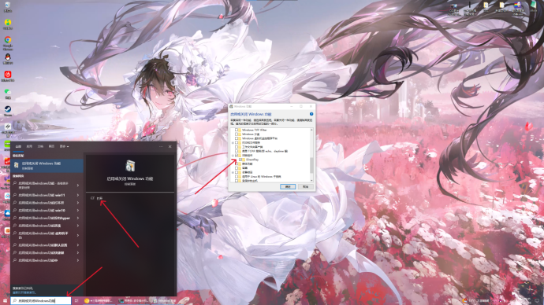
某些电脑重装系统或在游戏的安装目录内安装了大量的三方图和 MOD 也会导致游戏出现异常报错，此时您需要重新下载游戏并全新安装
★Q3：某些游戏有黑边/进入黑屏/显示不完全/小地图无法显示
由于 DF 系列大多是上世纪末或本世纪初发布的，它们无法适配现在的一些新硬件。如果出现问题请您尝试在游戏内将分辨率改为 1024x768 或更低。并且在显卡控制面板内，开启 GPU 缩放，并将缩放模式调整为整个面板。保存当前设置后再行打开游戏尝试
若您的游戏存在黑屏现象，有可能是上述的 GPU 缩放调整有误，也有可能的原因是缺乏关键的 Pff 包，因而请您对应具体条目来检查处理。前者需要您重新设定 GPU 缩放。后者请您重新下载完整的游戏资源包
由 NovaHQ 社区提供的修复程序针对 DF1、DFLW 和 DFTFD 的出现黑边问题进行了修复。同时也对 Windows 7 7601 及以上的系统启动/使用 2.05 系列的 MED 单程序多次读图崩溃的问题进行了修复（经实测并不能解决 MED 单程序多次读图崩溃的问题）
由社区提供针对 BHDTS 制作的宽屏补丁，您可访问 https://tieba.baidu.com/p/5280350112 获取安装与使用方法
目前 Intel 集成显卡（其中与 Intel Arc 独显兼容性未知，如果您是使用 Intel Arc 系列独显欢迎将您电脑上运行 DF 的情况告知我们）已经能够正常显示 DF 系列的小地图，请将 Intel 集成显卡 驱动版本更新至 32.0.101.6559 WHQL Certified 及以上版本 即可解决
我们即将使用 英特尔锐炫™ A770 显卡来测试 板块 6 中提供的游戏，请关注后续导航贴的更新
如您的配置有独立显卡的选项请尽量让游戏调用独立显卡来运行，关于游戏如何调用显卡的问题请参考 Q8 的调用方案
★Q4：为什么游戏不提供简体中文版
事实上 NovaLogic 官方并未提供过任何简体中文游戏，所谓的汉化版仅仅是国内玩家或平台分发需要所自行制作。受限于当时的制作水平和教育程度，很多细节并未完整体现。并且某些作品汉化水平参差不齐，存在一些翻译或其他影响游戏体验的问题。因此本帖暂不提供这类版本的下载，目前由吧务组正在制作简体中文版的相关游戏。现阶段玩家可以根据每部作品高水平的翻译来对于游戏剧情和世界观等方面进行参考
★Q5：我为什么无法购买/购买后无法启动 Delta Force:Black Hawk Down
Steam 上的 Delta Force:Black Hawk Down 已经停止销售。受此影响，您如果尚未购买/购买后（在 Delta Force:Black Hawk Down 已经停止销售后）未启动 Delta Force:Black Hawk Down ，则可能无法再入库/成功启动了
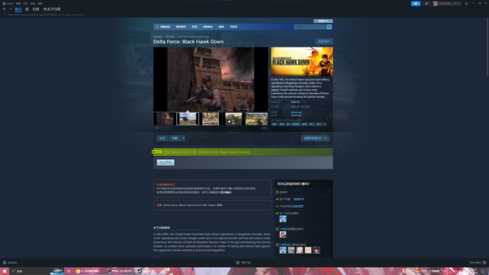
如果您并未在 Steam 上拥有 Delta Force:Black Hawk Down，却想购入 Delta Force:Black Hawk Down:Team Sabre 是不可以的。因为 Delta Force:Black Hawk Down:Team Sabre 需要 Delta Force:Black Hawk Down 作为前置才能正常游玩
Q6：报错提示缺少某些 DLL 文件
请仔细阅读报错提示中所缺失的 DLL 文件，在互联网上搜索提示缺失的 DLL 文件并下载后将 DLL 文件拷贝到游戏根目录内即可。如果您是通过压缩包安装的游戏，建议您仔细检查您的游戏是否解压完全
★Q7：我遭遇了 Program Error SYSDUMP.TXT Saved 字样的错误
这一行报错可能并不能反映出当前您所遭遇的问题，并且 NovaLogic 官方也并未提供过对应的解决方案。在这里我们将可能能够缓解或完全能够解决该问题的方案列出，您可以根据实际情况来寻找到对应条目排查解决。另请注意，一般来说您重新打开游戏，大概率就不会再此遇到该问题。如果您重新打开游戏后问题不再复现，可忽略改解决方案的内容。为什么这么说？根据报错所提供的转储文件来看。出现这类问题一般是你当前的游戏主程序在某些位置处出现访问冲突异常。即可能游戏运行到当前位置内存超过阈值或某些极端情况。（大多数情况都会显示如下报错：程序试图向未授权的内存地址 00000057h 写入数据（Attempting to write from 00000057h）或者在地址 00474FBDh，程序试图从地址 12022BA0h 读取内存，但该地址不可访问）。游戏程序为了防止游戏资源损坏从而进行的一种自我保护。重启之后一切会重新进行，您重启后运行到问题点位，若未出现问题可不再查阅本处内容。如果打开游戏后依旧出现该问题，则您可能要考虑下面的解决方案
【近期有安装过三方图或 MOD 的】
检查您的三方图或 MOD 是否符合当前运行版本或他们是否安装正确，仔细检查它们的校验值或在相关渠道找寻更多的信息，如安装过程的问题或其他本身的缺陷。若不能解决请删除掉近期安装的所有的三方图或 MOD
【近期有改动/升级过游戏文件的】
重新下载游戏资源并覆盖安装
【第一次游玩遭遇报错的】
检查您的游戏路径是否有中文或路径名称过于复杂冗长，并尝试更改安装路径再行尝试。亦或者请您参考 Q1、Q2、Q10 所提供的解决方案来解决
【游玩过程途中报错的】
重新打开游戏不读档再次将游戏运行至报错前的位置查看问题是否复现
该错误主要由游戏程序试图在某个点位写入无效内存地址引起，可能本身当前运行的地图或 MOD 存在一些代码性的缺陷、兼容性问题或触发了系统的保护机制。若不想排查问题建议按优先级尝试以下步骤：更新或重装程序、按照上述方法定位问题、调整系统 DEP 设置或兼容性模式、使用调试工具定位代码问题
如果需要进一步分析 Program Error SYSDUMP.TXT Saved ，则要定位至相关的报错中对应的函数或代码片段。如果上述的解决方案不可用，那么请您重新下载当前游戏或更换游戏环境后再行尝试。若您无法解决当前所发生的问题，您也可以将出现当前问题发生的过程尽可能详细的发布至贴吧或官方群中，以便我们帮助您调查解决
★Q8：我的游戏在显卡检测界面报错，提示 The resolution test has failed. Please make sure that you have the latest drivers for your video card and run the Video Test again
请根据您的硬件平台来选择具体的解决方案。目前有关于游戏调用显卡的问题仍然是一个未知数。经过多次实验，游戏对于显卡调用优先级的方式是：可识别的独立显卡和不可识别的独立显卡＞可识别的集成显卡和不可识别的独立显卡＞不可识别的集成显卡和不可识别的独立显卡（游戏此时基本上无法运行）。如果您是台式机用户，则一般无需考虑显卡的选择，除非是程序无法识别到您的独立显卡则需要考虑暂时禁用核显。台式机禁用核显需要在 BIOS 界面进行修改，因主板而异这里暂不提供关闭方法。或者打开 设置 → 系统 → 图形设置，选择 桌面应用 并单击浏览，选择游戏主程序选择以 集成显卡 / 独立显卡 运行
【请检查显卡控制面板内是否开启了 Direct3D 加速功能】
如果您的显卡不支持此功能请更换游戏环境，若未开启此功能请开启它
【有独立显卡但是型号较老旧】
请将您的显卡驱动升级至最新版本后再行尝试，若依旧报错则您可能需要考虑更换硬件平台进行游戏
【有独立显卡但是型号较新】
温馨提示：Intel 的集成显卡已经能够正常显示 DF 系列的小地图，将驱动版本更新至 32.0.101.6559 WHQL Certified 及以上版本即可
如果您并非使用 Intel 集成显卡的配置请尝试参考下面关于显卡的使用方案
【有独立显卡且 CPU 有核显，并且为笔记本】
使用 Display Driver Uninstaller 完整卸载掉全部的显卡驱动程序，并在官网下载驱动下载最新稳定版本的驱动覆盖安装尝试。若前述的方案不可用，则需要在 Nvidia 或 AMD 显卡控制面板针对游戏主程序采用独立显卡处理再行尝试。若前述的方案依旧不可用，笔记本若支持独显直连请您在 BIOS 界面禁用掉独显再尝试运行
【远程/云电脑等导致无法运行】
请检查当前环境下的分辨率，并且在远程/云电脑运行其之前提前运行一次游戏，以便游戏能够执行正确的分辨率
Q9：我的游戏在激活时只能键入三个字符
请您在任务栏搜索框键入 调整 Clear Type 文本 并打开，取消勾选 启用 Clear Type 即可
Q10：我的游戏在运行过程中报错，提示 This program was not installed using the provided installer please uninstall and reinstall
请您重新下载游戏资源包并全覆盖安装
Q11：我的游戏在运行过程中报错，提示 Unable to load error strings
请您重新下载游戏资源包并全覆盖安装
Q12：我的游戏在运行过程中报错，提示 ！Polytrn Color Map not specified
请您尽量不要使用 Demo 版本做出各种各样的异常行为举动，换回正式版的游戏版本进行游玩
Q13：Unable to find file resources, missing CD
请您重新下载游戏资源包并全覆盖安装或在游戏包内找到免 CD 补丁将其拷贝替换至游戏根目录
Q14：Error: This Game requires at least 64MB of RAM
请检查您的内存是否低于 64MB，如果是请您更换游戏平台游玩
Q15：Error: MMX compatible processor not found
请检查您的 CPU 是否支持 MMX 扩展，如果不支持请您更换游戏平台游玩
Q16：Memory initialization failed, check hard disk space
请您参考您的内存或存储是否存在问题，如果不存在问题请参考 Q2 的解决方案
★Q17：我的游戏闪退
请您检查游戏资源的完整性或参考 Q1 Q7 的解决方案解决
Q18：我的游戏在启动过程中报错，无法定位序数 X 在某个动态链接库上
尝试重新从本吧中提供的游戏资源重新下载并安装。若前述错误依旧，请检查你的系统是否为精简版系统，若不是精简版系统则可能当前系统缺失部分运行环境或系统某些组件有缺失。请参考 Q2 的解决方案并搜索：微软常用运行库合集。安装所必须的项目，若是精简版系统则需要考虑找一台系统完成的电脑再行尝试
Q19：我的游戏在运行过程中报错，提示 Warning: Your Windows Virtual Memory swap file is less than the minimumrecommended size of 140Mb. You may have to reduce video detail settings in the game in order to play X. Please refer to the README.TXT for more information（ X 指代具体运行时的游戏作品）
当前您的 Windows 虚拟内存低于游戏的最低启动要求 140Mb 而导致无法启动游戏，请打开 控制面板 选择 系统和安全 → 系统 → 高级系统设置；高级 选项卡下，点击 性能 → 设置 按钮；选中 高级 选项卡，点击 更改 中位于虚拟内存部分；取消选中 自动管理分页文件大小 ，然后选择系统盘；选择 自定义大小 并设置一个合适您电脑配置的初始大小和最大大小；点击 设置 → 确定 应用上述改动。稍后，请重新启动您的计算机再次尝试运行。如果上述的解决方案不可用，请把您当前电脑里的配置和游戏在何处下载等信息发送给我们以便我们参考解决
另外，Windows 11 24H2（操作系统内部版本为 26100）之后的版本对 DF1 至 DFTFD 的全屏支持均不兼容。解决方法是回滚 23H2（操作系统内部版本为 22631）或使用老游戏兼容修改器 Run Fullscreen Programs in Windows（dxwnd.org）
★Q20：我在 Steam 上购买的 Delta Force:Xtreme 2 为什么无法激活
Delta Force:Xtreme 2 的激活服务器已经关闭，无法进行联网验证并激活。建议您可以考虑在本贴中找寻相应资源进行游玩
Q21：我的游戏在启动过程中报错，提示 You CPU speed has been detected as approximately 0.0 GHz. X requires a minimum CPU speed of 1.2 GHz. You will experience decreased performance during gameplay（ X 指代具体运行时的游戏作品）
这种情况偶发于 Demo 版本，一般忽略它正常启动即可。如果您在正常版本中遭遇此错误，请检查您的 CPU 是否过新/旧
Q22：我的游戏在安装过程中报错，提示 lnstallShield Wizard Setup has experienced an error. Please do the following: Close any running programs-Empty your temporary folder. Check your Internet connection ( Internet-based Setups ) Then try to run the Setup again. Error code: -6006
请您右键选中安装程序，以管理员身份运行即可。如果前述方案不可用请尝试如下方案：关闭所有正在运行的程序并清空临时文件夹的内容；检查互联网连接（基于互联网的设置）。若仍旧安装失败，请您检查当前资源包的完整性
Q23：我的游戏在安装补丁过程中报错，提示 wizpatch: ERROR ! Errors occured during extraction
请您右键选中安装程序，以管理员身份运行即可。如果前述方案不可用，请您检查当前补丁包的完整性
★Q24：我的单人任务/多人任务/某些设置选项是灰色的，无法选择/更改
如果是 BHD/BHDTS 系列作品。请您单击游戏相应名称的缩写（ DFBHD ）来进入游戏。如果游戏主程序执行正确但无法选择对应条目，请您下载相关版本的免 CD 补丁，覆盖安装至游戏根目录，再尝试游戏。其他的游戏也可参考这个来执行对应操作
极个别的电脑由于管理员权限问题无法正常安装替换，且游戏目录内无法生成配置文件 dfv.cfg 。故所有操作请务必在管理员权限下执行
Q25：我的游戏在卸载过程中报错，提示 An error ( -5004: 0x7e ) has occurred while running the setup. Please make sure you have finished any previous setup and closed other applications. lf the error still occurs. Please contact your vendor: NovaLogic
请右键卸载程序，选择以管理员身份运行。或依照报错提示，关闭所有正在运行的程序；检查当前资源包的完整性
注意有一些较为邪门的版本如 DF2 Demo 在安装释放后程序本身没有在安装目录内创建卸载程序而是将卸载程序装入了 Windows 根目录中，建议您将其整个文件夹删除后，删除 Windows 根目录中的卸载程序。并将其在开始菜单中创建的条目一并删除。如果您对电脑有一些清洁洁癖，建议配合使用 Windows Manager 和 Dism++ 等软件
Q26：我的游戏默认键位出现问题，如按 M 键打开地图，对着弹药库按 0 是更换武器和切换武器。但按 0 打出的是 / ，按 M 打出的是 0
这种情况多出现于没有小键盘的笔记本和某些服务器机柜自带的键盘上，请一起按 Fn 和 Num LK 键关闭自带的小键盘
Q27：我的游戏按键失灵/不对
请保证游戏运行过程中，当前使用的输入法在全英文模式下运行，并且在游戏设置中将游戏内键位重新调整至默认值
Q28：我下载的黑鹰坠落无法进入战役 Marka Breakdown、River Raid、BESIEGED 和 Aidid Takedown ，具体表现为战役 Marka Breakdown 、 River Raid 和 Aidid Takedown 加载完任务简报、战役 BESIEGED 在悍马车第一次右转弯提示 Program Error SYSDUMP.TXT Saved
这种问题一般出现在电脑配置很早的配置上。例如 Intel T2300 会出现这类问题。如果当前黑鹰坠落无法运行上述的一些战役请尝试使用军刀部队再次运行它们，或更换电脑配置再次尝试
如果您是 Intel 集成显卡的用户运行 Aidid Takedown 也有概率出现这类问题，建议您更换游戏环境游玩
Q29：我的游戏出现错误，提示某 DLL 模块已加载，但找不到入口点 DllGetClassObject / DllRegisterServer / DllUnregisterServer / DllMain，请确保其为有效的 DLL 或 OCX 文件，然后重试。或提示某模块已经加载，但对 DllGetClassObject / DllRegisterServer / DllUnregisterServer / DllMain 的调用失败，错误代码为 K
这种情况一般出现在精简版的系统上，如果您需要正确的注册系统 DLL 文件需要保证与当前系统平台的兼容性和当前操作系统版本相一致，并且全程需要以管理员环境来运行下述指令
按下 Win + R 键，打开运行窗口，在弹出的窗口中，键入如下例子。这其中 X 为注册 DLL 的盘符， Y 为注册时的路径，若在 X 盘符下则不需要 Y 。 Z 为 DLL 名称
regsvr32 X:\Y\Z.dll
Q30：我的游戏出现错误，提示 Program Error This Demo version has expired
某些测试版本出于保护或评估的目的会为当前运行的版本添加一个时间验证，当时间超过预设值后表现为无法启动该游戏。若想启动他们则需要将对应的本机时间调整至 Demo 的允许游戏的时间之前，并且阻断系统自动同步时间即可正常游玩
Q31：我的游戏无法在分辨率处检测通过，并且我是远程连接/云电脑/掌机这些设备运行
通常情况远程连接需要提前在本机上运行一次游戏，等待分辨率检测通过才能运行。否则，如果使用 Windows 原生的远程桌面连接会导致程序误判当前连接设备的分辨率出现问题导致无法正常运行。云电脑和掌机这类由于原生分辨率受限，可能会出现无法正常运行的情况。如果需要良好的体验建议仍然使用正常的游戏方式进行游戏
Q32：我下载的 Delta Force: Xtreme 无法选出主武器 / Delta Force: Black Hawk Down - Team Sabre 声音不全
如果您是在网络上下载的一些版本出现的问题，由于这些版本对游戏资源做出了一些处理，很可能会出现问题导致无法正常游戏。建议您从本贴内重新下载完整的游戏资源进行游戏
Q33：我在安装更新时出现错误，提示 wizpatch: ERROR! Could not change directory or user aborted
如果您并未取消更新的安装，请用管理员身份运行安装程序再试
Q34：我在游戏中遇到错误，提示 !Unable to find height map (desperado_d.pcx) 或 !Unable to find XXX 等问题
这个问题通常是游戏丢失了运行所必须的相关材质或资源，建议您检查游戏完整性，若丢失请重新安装游戏
Q35：Steam 的 DF 游戏没有开场动画
请参考 https://tieba.baidu.com/p/5415247768 解决
Q36：我在游戏中遇到错误，提示应用程序无法正常启动（0xc000007b）。请单击“确定”关闭应用程序
一般来说，这个问题出现在 重装系统后运行游戏或 Windows 7 操作系统中
如果是重装系统出现的问题，此时请您重新下载游戏资源包，并按照 Q2 的问题解决方案排查解决一遍
如果是 Windows 7 操作系统，请尝试彻底卸载机器上所有第三方杀毒、管家软件，并使用干净启动模式启动以排除第三方软件的影响
同时按 Windows 徽标键 + R，键入 msconfig ，按回车 Enter 。点击 服务 > 隐藏所有 Microsoft 服务 > 全部禁用 （若您启用了指纹识别功能，请不要关闭相关服务）
启动 任务管理器，点击 启动 选项卡，将所有启动项都禁用后重启设备
再行观察问题是否解决
其他问题等待陆续发现和解决
以下是对于 DF 系列有着更多研究的几个主要站点，您可以在上面找寻到有关于 DF 系列的更多信息
NovaLogic 官方网站：http://www.novalogic.com
NovaHQ 论坛：https://novahq.net
联机模组 AW2 网站：
MOD DB：
Discord 论坛：暂不提供
DF fb 社区：暂不提供
三角洲特种部队吧：https://tieba.baidu.com/f?kw=%E4%B8%89%E8%A7%92%E6%B4%B2%E7%89%B9%E7%A7%8D%E9%83%A8%E9%98%9F
WSCY 的 BHD 地图吧：https://tieba.baidu.com/f?kw=wscy%E7%9A%84bhd%E5%9C%B0%E5%9B%BE
科曼奇吧：https://tieba.baidu.com/f?kw=%E7%A7%91%E6%9B%BC%E5%A5%87
NovaLogic 吧：https://tieba.baidu.com/f?kw=novalogic
以下是对于 DF 系列有着更多情怀与研究的几个主要交流群，您可以加入相关的 DF 群聊来结交更多志同道合的小伙伴一起游玩
三角洲特种部队贴吧官方 Q 群 ：74742315
Delta Force : 110975961
Delta Force 2 : 8882800
Delta Force:Land Warrior : 47788026
Delta Force:Black Hawk Down:Team Sabre : 86394597
Delta Force Xtreme Raising Conflict 2 MOD : 49165588
Delta Force:Xtreme 2 : 656279164
Joint Operations / Joint Operations:Advanced Warfare 2 MOD / Joint Operations:International Conflict Europe MOD : 570643745
Delta Force MOD Group : 708064613
5.【其他内容】有关目前 Delta Force 系列的其他资料与帮助
5.1【游戏测评】IGN 对《三角洲特种部队》系列游戏的评价
https://pan.baidu.com/s/1kVcARJL
5.2【三方图】贴吧吧友 Ma-Y 制作的 DF 系列三方图资源汇总
https://tieba.baidu.com/p/6659284837
5.3【三方图】贴吧吧务 一秒超酷. 制作的 BHD/BHDTS 系列三方图资源汇总
https://tieba.baidu.com/p/9379017804
https://tieba.baidu.com/p/6159223909
吧务 一秒超酷. 个人主观看法，请参考：https://tieba.baidu.com/p/9922550547
5.5【教程】贴吧吧务 一秒超酷. 制作的三角洲特种部队黑鹰坠落 MED 基础教程
三特吧内的精品贴涵盖了吧友针对游戏的研究和制作出的地图等游戏扩展资料，您可以在本吧中的精品贴中分类的资源区来找寻更多的帮助和扩展资料与内容，同游戏配合食用。同时也可以在搜索栏中找寻更多您需要的信息
链接直达：https://tieba.baidu.com/f?kw=%E4%B8%89%E8%A7%92%E6%B4%B2%E7%89%B9%E7%A7%8D%E9%83%A8%E9%98%9F&ie=utf-8&tab=good
在安装三方图和 MOD 之前，请您按照如下操作来进行。首先，找到您的游戏安装目录，右键游戏主程序，选择创建快捷方式。右键刚刚创建的快捷方式，在目标栏键入空格/d。即（空格）/d。如果您是 Steam 玩家，则需要在您 Steam 的游戏库里添加游戏主程序的快捷方式，然后右键点击属性里的目标栏里最后面加空格斜线和 d。即（空格）/d
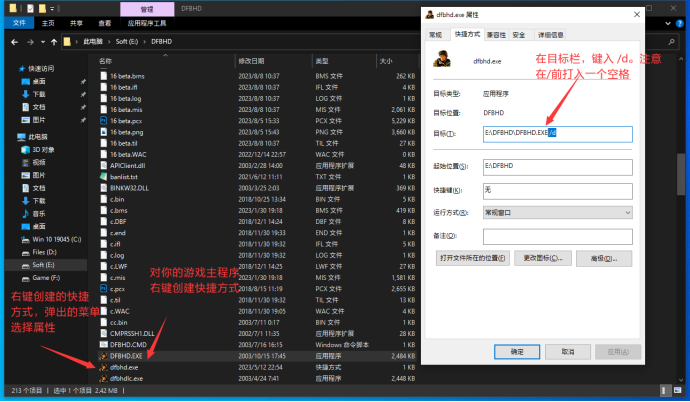
三方图的安装较为简单，您只需要将下载好后的三方图图包内的所有元素拷贝至您的游戏根目录中，用刚刚创建的快捷方式进入游戏即可。随后，您可以在已完成的任务中看到您刚刚添加的三方图
如果是 MOD，则需要根据 MOD 的安装程序内的具体说明进行安装，安装的目录一般是游戏的根目录。贴吧内搬运了大部分的精品 MOD ，您可以前往精品贴内或采用搜索功能来找寻您想要的 MOD。其安装一般是开箱即玩，只需要单击桌面上创建好的快捷方式即可游玩
特别注意，不管是三方图还是 MOD，您都需要仔细看清下载的三方图或 MOD 是否匹配您当前的游戏版本和游戏主体，如果强行安装一些不适配版本或者游戏主体的三方图或 MOD，很有可能导致游戏损坏。另外并非所有三方图与 MOD 都能符合您的需求，三方图与 MOD 本身质量参差不齐，如果单纯需要游玩一些高质量的三方图或 MOD。建议您可以在上述的社群找寻评价高的三方图或 MOD 进行游玩
如果您只是想下载游戏畅快游玩，不想了解版本和其他更新方面内容可不用看本处帮助内容，这里的帮助联动的是导航末尾的 Beta 版块
首先，您需要下载好本贴所提供的 exe 文件。然后，您需要打开它在弹出的窗口中选择您的游戏目录并选择相应的目录或文件，并单击确定。稍等一段时间，等待程序安装完成后，退出即可
注意，如果当前您的游戏运行完整请不要随意地去更改它。如果您在升级过程中或升级完成后遭遇了问题，请您移步至第三章节的子问题 Q12，Q13，Q21，Q22，Q23，Q33 处查找对应的解决方案
5.9【游戏环境测试】板块 6 提供的游戏资源在不同平台上的运行测试
为了帮助玩家在下载前掌握游戏内运行环境，我们将不同平台的运行测试结果贴出，供玩家参考自己平台的运行情况，如果您有运行情况补充，欢迎在文档下方将您电脑上的游戏环境和详细配置与游戏情况留言。我们收到后会尽数采纳。以下测试环节仅供参考
5.9.1 使用 Intel CPU+ Nvidia 显卡组合
截至 250205 测试使用的两组平台分别为 i5-12600KF + RTX 4070 Ti Super / i7-14700KF + RX 6600 XT，操作系统为 Windows 11 27783.1000 / Windows 10 19045.5552。资源的测试存在一定的时效性。这其中本贴所提供的游戏资源未发现无法在上述平台运行，若依旧报错则您可能需要考虑更换硬件平台，若您的处理器自带集成显卡，则您可以在 设置-系统-图形设置-对应游戏主程序-选择集成显卡 来进行游戏
5.9.2 使用 Intel CPU + Intel 锐炫 A770 显卡组合
等待测试
所有资源均完整运行，测试平台为 AMD R7 4700U + AMD Radeon(TM) Graphics 512MB。黑鹰坠落需要在 显卡控制面板 中手动调整 GPU 缩放
为节省网盘空间和您的下载时间，资源贴游戏资源绝大部分采用 7Z 压缩格式并部署在相关桶中。请您使用 7-zip 等解压工具来解压本贴所提供的游戏资源 此板块特别感谢 DF fb 社区和贴吧吧友 Bravo 3638 对本版块资源参与补充 本版块游戏下载资源请参考 5.9 的游戏环境测试 特别感谢贴吧吧友 飞越无尽暗空 个人对 DF 系列的官方手册的汉化和其他游戏研究的帮助，向前辈致以最崇高的敬意 所有游戏本体资源的提取码：sjztzbdb（三角洲特种部队吧的英文缩写） |
（国内译为《三角洲特种部队》，简称：DF1，Version：1.00.03.03P）
温馨提示：如果您是 Windows XP 系统用户运行此处提供的 DF1 可能会遭遇地雷无法正常摆放等问题，建议升级您的操作系统后使用此处资源
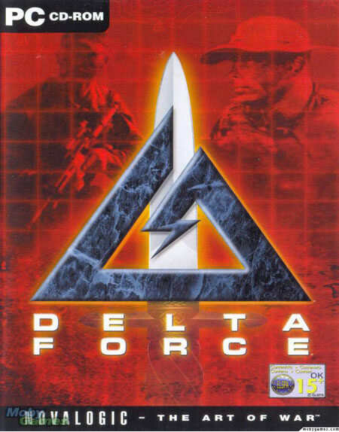
Steam 平台：https://store.steampowered.com/app/32620/Delta_Force
中文版游戏手册和帮助资料：https://pan.baidu.com/s/1hrint3m
非官方游戏 MOD ：https://novahq.net/files.php?CategoryID=DF1&Type=Mod&Game=Delta%20Force%201
非官方游戏地图：https://novahq.net/maps.php?CategoryID=DF1&Game=Delta%20Force%201
中文版非官方地图设计教程和工具：https://pan.baidu.com/s/1jJBD72wuqz6kNFTaT7gvYA 提取码：9cn3
游戏下载链接 1：https://kos.cn-hongkong.kitasoda.com/yalm/Delta%20Force.zip
游戏下载链接 2：https://pan.huang1111.cn/s/A6vmMsB（提取码：sjztzbdb）
（国内译为《三角洲特种部队 2》，简称：DF2，Version：1.06.15）
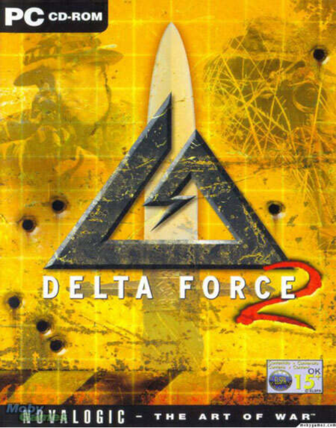
Steam 平台：https://store.steampowered.com/app/32630/Delta_Force_2
中文版 BRADY 官方攻略指南：https://pan.baidu.com/s/1gfN1O9X
中文版游戏手册和帮助资料（包括官方攻略指南）：https://pan.baidu.com/s/1eRHOE3K
【揭秘】美国陆军使用《三角洲特种部队 2》进行训练：https://shimo.im/docs/PW3V8xTQ66QXrhKX
非官方游戏 MOD ：https://novahq.net/files.php?CategoryID=DF2&Type=Mod&Game=Delta%20Force%202
非官方游戏地图：https://novahq.net/maps.php?CategoryID=DF2&Game=Delta%20Force%202
非官方地图设计教程和工具：https://pan.baidu.com/s/1gNxIPFNqw0_bJdPIuoP0Jw 提取码：sp4s
游戏下载链接 1：https://kos.cn-hongkong.kitasoda.com/yalm/Delta%20Force%202%20EVO.zip
游戏下载链接 2：https://pan.huang1111.cn/s/Wzgmac3（提取码：sjztzbdb）
6.1.3《Delta Force: Land Warrior》（系列第三部）
（国内译为《三角洲特种部队：大地勇士》，简称：DFLW，Version：1.00.42）
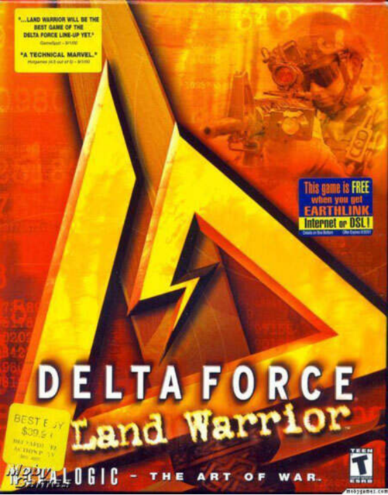
Steam 平台：https://store.steampowered.com/app/32640/Delta_Force_Land_Warrior
中文版游戏手册和帮助资料：https://pan.baidu.com/s/1hqq9wBM
非官方游戏 MOD ：http://novahq.net/files.php?CategoryID=DFLW&Type=Mod&Game=Delta%20Force%20Land%20Warrior
非官方游戏地图：http://novahq.net/maps.php?CategoryID=DFLW&Game=Delta%20Force%20Land%20Warrior
非官方地图设计教程和工具：https://wws.lanzoui.com/ijMFuimudyh
游戏下载链接 1：https://kos.cn-hongkong.kitasoda.com/yalm/Delta%20Force%20Land%20Warrior%20%281%29.zip
游戏下载链接 2：https://pan.huang1111.cn/s/mxnmZh1（提取码：sjztzbdb）
6.1.4《Delta Force: Task Force Dagger》（系列第四部）
（国内译为《三角洲特种部队：刺刀特遣队》或《近战突击队》，简称：DFTFD，Version：1.00.09）
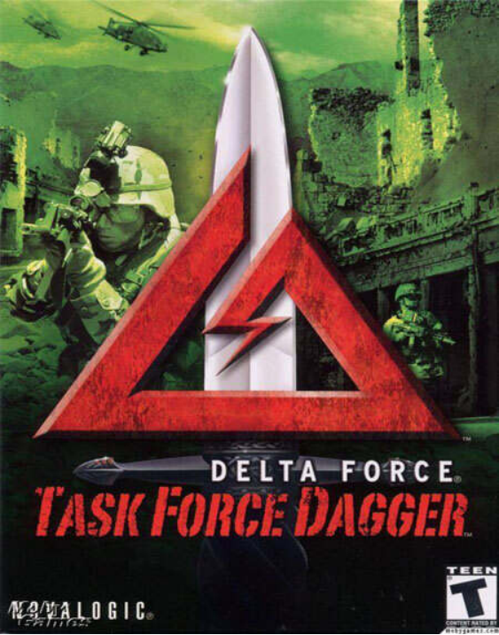
Steam 平台：https://store.steampowered.com/app/32650/Delta_Force_Task_Force_Dagger
中文版游戏手册和帮助资料：https://pan.baidu.com/s/1o67ZofS
【补充】游戏攻略和 BUG 研究：https://shimo.im/docs/pvkDhWxxGhttJCgK
非官方游戏 MOD ：http://novahq.net/files.php?CategoryID=DFTFD&Type=Mod&Game=Delta%20Force%20Task%20Force%20Dagger
非官方游戏地图：http://novahq.net/maps.php?CategoryID=DFTFD&Game=Delta%20Force%20Task%20Force%20Dagger
非官方地图设计教程和工具：https://wws.lanzoui.com/iOZ9Timzy1a
游戏下载链接 1：https://kos.cn-hongkong.kitasoda.com/yalm/Delta%20Force%20Task%20Force%20Dagger.zip
游戏下载链接 2：https://pan.huang1111.cn/s/75Z6jHg（提取码：sjztzbdb）
6.1.5《Delta Force: Black Hawk Down》（系列第五部）
（国内译为《三角洲特种部队：黑鹰坠落》，简称：DFBHD，Version：1.5.0.5）
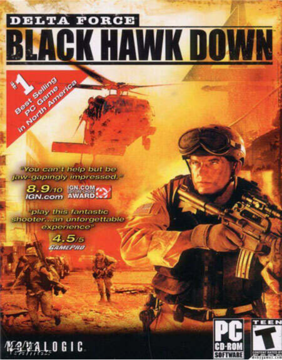
Steam 平台：https://store.steampowered.com/app/32670/Delta_Force_Black_Hawk_Down
温馨提示：如果你只想单独下载黑鹰坠落或中文版游戏请参考板块 7。贴吧管理组自行封装优化并汉化的游戏请参考板块 6.6
中文版 PRIMA 官方攻略指南：https://pan.baidu.com/s/1qYynPUW
中文版游戏手册和帮助资料（包括官方攻略指南和原声音乐）：https://pan.baidu.com/s/1c25ypLA
非官方游戏 MOD ：http://novahq.net/files.php?CategoryID=DFBHD&Type=Mod&Game=Black%20Hawk%20Down
非官方游戏地图：http://novahq.net/maps.php?CategoryID=DFBHD&Game=Black%20Hawk%20Down
中文版非官方地图设计教程和工具：https://pan.baidu.com/s/1IvQcf_sg0zMvTIM24fDxOg 提取码：3p7f
游戏下载链接 1：https://kos.cn-hongkong.kitasoda.com/yalm/0800stdhbfd.zip
游戏下载链接 2：https://pan.huang1111.cn/s/laKWRuL（提取码：sjztzbdb）
6.1.6《Delta Force: Black Hawk Down - Team Sabre》（系列第六部）
（国内译为《三角洲特种部队：黑鹰坠落 - 军刀部队》，简称：BHDTS，Version：1.5.0.5）
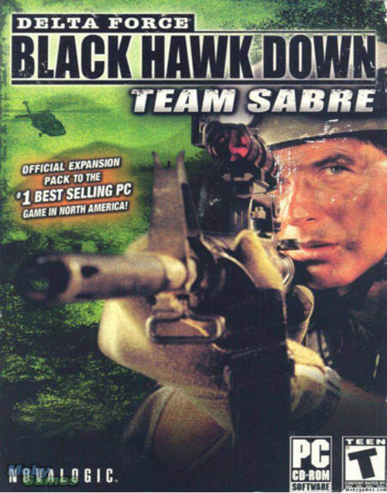
Steam 平台：https://store.steampowered.com/app/32680/Delta_Force__Black_Hawk_Down_Team_Sabre
中文版 PRIMA 官方攻略指南：https://pan.baidu.com/s/1VKaaJRA8bMNHYg1jIWV9Bw 提取码：f43t
中文版游戏手册和帮助资料（包括官方攻略指南和原声音乐）：https://wws.lanzoui.com/iAY28fvwbva
非官方游戏 MOD ：http://novahq.net/files.php?CategoryID=DFBHDTS&Type=Mod&Game=Black%20Hawk%20Down%20Team%20Sabre
非官方游戏地图：http://novahq.net/maps.php?CategoryID=DFBHDTS&Game=Black%20Hawk%20Down%20Team%20Sabre
中文版非官方地图设计教程和工具：https://wws.lanzoui.com/iXXvNib71xa
游戏下载链接 1：https://kos.cn-hongkong.kitasoda.com/yalm/0800stdhbfd.zip
游戏下载链接 2：https://pan.huang1111.cn/s/laKWRuL（提取码：sjztzbdb）
6.1.7《Delta Force: Xtreme》（系列第七部）
（国内译为《三角洲特种部队：极限作战》，简称：DFX，Version：1.6.9.3）
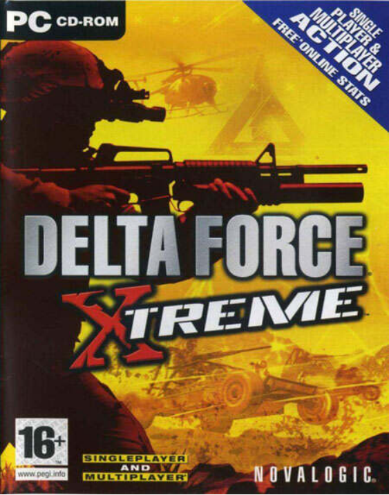
Steam 平台：https://store.steampowered.com/app/32660/Delta_Force_Xtreme
中文版游戏手册和帮助资料：https://pan.baidu.com/s/1qW3TEJa
非官方游戏 MOD ：http://novahq.net/files.php?CategoryID=DFX&Type=Mod&Game=Delta%20Force%20Xtreme
非官方游戏地图：http://novahq.net/maps.php?CategoryID=DFX&Game=Delta%20Force%20Xtreme
中文版非官方地图设计教程和工具：https://pan.baidu.com/s/1ON5tzq5IaaXPiI-hRYjNAg 提取码：b2x9
游戏下载链接 1：https://kos.cn-hongkong.kitasoda.com/yalm/%E4%B8%89%E8%A7%92%E6%B4%B2%E7%89%B9%E7%A7%8D%E9%83%A8%E9%98%9F%E6%9E%81%E9%99%90%E7%89%88%EF%BC%88%E7%BB%88%E6%9E%81%E7%9B%AE%E6%A0%87%EF%BC%89DFX.zip
游戏下载链接 2：https://pan.huang1111.cn/s/75ZyEUg（提取码：sjztzbdb）
6.1.8《Delta Force: Xtreme 2》（系列第八部）
（国内译为《三角洲特种部队：极限作战 2》，简称：DFX2，Version：2.1.4.3）
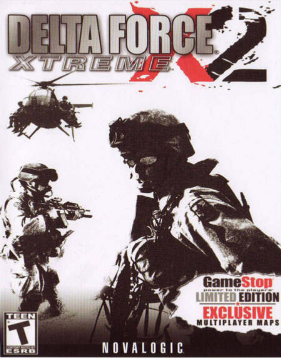
Steam 平台：https://store.steampowered.com/app/32610/Delta_Force_Xtreme_2
中文版游戏手册和帮助资料：https://pan.baidu.com/s/1pJzmXQz
非官方游戏 MOD ：http://novahq.net/files.php?CategoryID=DFX2&Type=Mod&Game=Delta%20Force%20Xtreme%202
非官方游戏地图：http://novahq.net/maps.php?CategoryID=DFX2&Game=Delta%20Force%20Xtreme%202
中文版非官方地图设计教程和工具：https://pan.baidu.com/s/1gP5XHKc45f4SpkeJZsyjiA 提取码：vfc3
游戏下载链接 1：https://kos.cn-hongkong.kitasoda.com/yalm/Delta%20Force%20Xtreme%202.rar
游戏下载链接 2：https://pan.huang1111.cn/s/laKDZhL（提取码：sjztzbdb）
温馨提示： 6.2 板块均为主机游戏，正常游戏玩家可直接跳过本版块。本处内容参考作者 飞越无尽暗空 所整理的导航贴内容：https://shimo.im/docs/ubOmcxzhtd00ug4C/read
6.2.1《Delta Force: Urban Warfare》（平台：PlayStation）
（国内译为《三角洲特种部队：城市战争》，简称：DFUW）
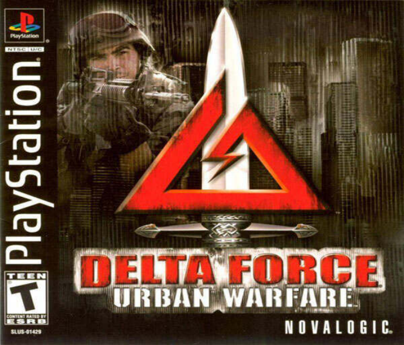
提示：本游戏需要使用 XEBRA 模拟器
游戏资源（包括模拟器）：https://pan.baidu.com/s/1slJVgU5
未找到游戏手册
6.2.2《Delta Force: Black Hawk Down》（平台：PlayStation 2）
提示：本游戏需要使用 PCSX2 模拟器
游戏资源：https://pan.baidu.com/s/1qYJr6Wk
中文版游戏手册：暂无
6.2.3《Delta Force: Black Hawk Down》（平台：XBOX）
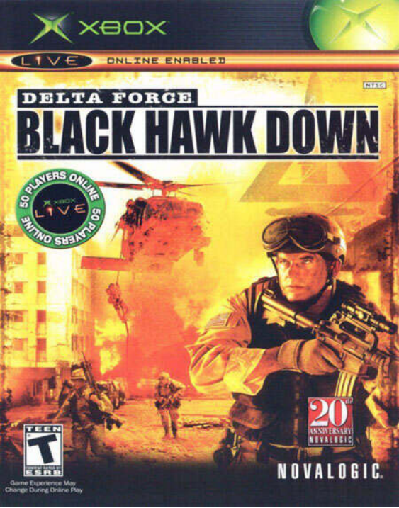
提示：由于目前的 XBOX 模拟器还不完善，因此可能无法运行它
游戏资源：https://pan.baidu.com/s/1qYt9bAW
中文版游戏手册：https://pan.baidu.com/s/1rQlZFk84VIAcCQ-99ebYMg 提取码：5d3r
6.2.4《Delta Force: Black Hawk Down Team Sabre》（平台：PlayStation 2）
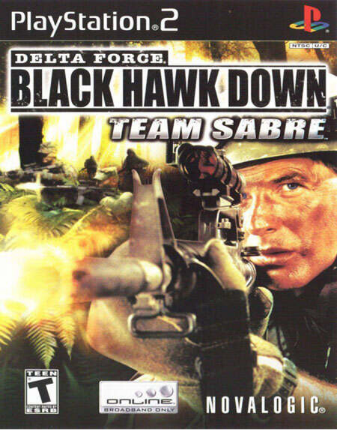
提示：本游戏需要使用 PCSX2 模拟器
游戏资源：https://pan.baidu.com/s/1i58GvNf
中文版游戏手册：暂无
以下的射击游戏也是由 NovaLogic 公司开发，但它们不属于《三角洲特种部队》系列。我们将其一并列出并提供
本版块内容参考作者 飞越无尽暗空 所整理的导航贴内容：https://shimo.im/docs/ubOmcxzhtd00ug4C/read
温馨提示：由于网盘存储空间问题暂时未上传高速链。推荐您前往 https://docs.qq.com/doc/DWVF5ZGVRS25iYmhI 进行下载
6.3.1《Joint Operations: Typhoon Rising》（PC 版，英文版）
（国内译为《联合行动：飓风来袭》，简称：JOTR）
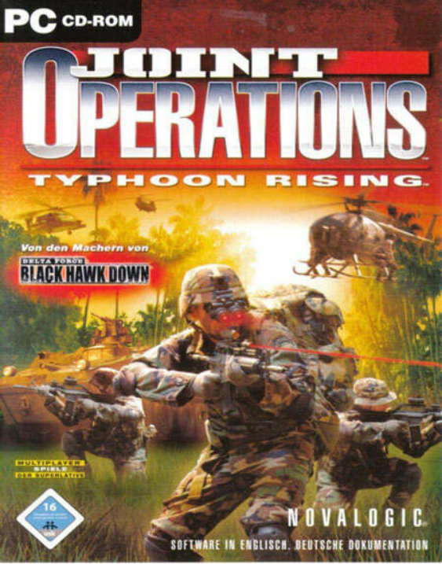
游戏资源：https://pan.baidu.com/s/1qYLZypQ
中文版 PRIMA 官方攻略指南：https://pan.baidu.com/s/1kbErNWuZlrX5iwbOF-hSjQ 提取码：7geb
中文版游戏手册和帮助资料：https://pan.baidu.com/s/1eS4cMPk
非官方游戏 MOD ：http://novahq.net/files.php?CategoryID=JOTR&Type=Mod&Game=Joint%20Operations%20Typhoon%20Rising
非官方游戏地图：http://novahq.net/maps.php?CategoryID=JOTR&Game=Joint%20Operations%20Typhoon%20Rising
6.3.2《Joint Operations: Escalation》（PC 版，英文版）
（国内译为《联合行动：冲突升级》，简称：JOE）
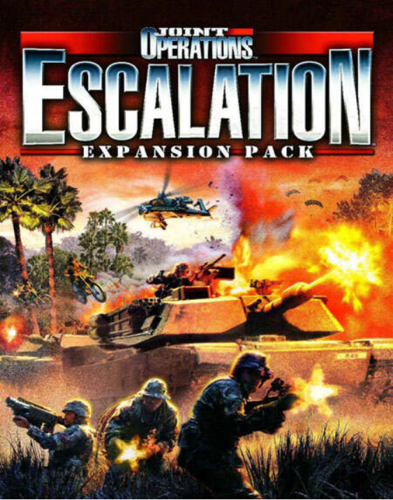
游戏资源：https://pan.baidu.com/s/1qYoP3pM
中文版游戏手册和帮助资料：https://pan.baidu.com/s/1eS4cMPk
非官方游戏 MOD ：http://novahq.net/files.php?CategoryID=JOE&Type=Mod&Game=Joint%20Operations%20Escalations
非官方游戏地图：http://novahq.net/maps.php?CategoryID=JOE&Game=Joint%20Operations%20Escalations
6.3.3《Joint Operations: Combined Arms》（PC 版，英文版）
（国内译为《联合行动：综合武力》，简称：JOCA）
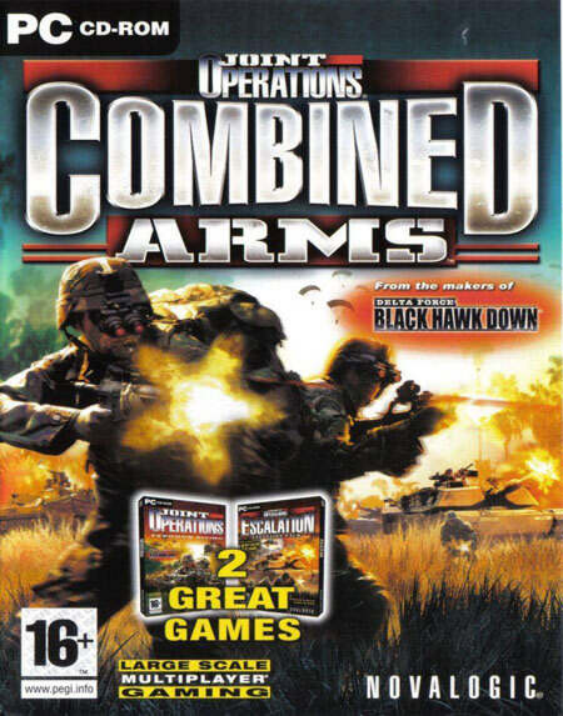
正版游戏：https://store.steampowered.com/app/32770/Joint_Operations_Combined_Arms_Gold/
Steam 版游戏剧情汉化包：https://pan.baidu.com/s/1kw-jDeUgzZYGdUCSeevlcQ 提取码：j6uf
中文版游戏手册和帮助资料合集：https://pan.baidu.com/s/1Eq19apsKpNmireSJcr5hiQ 提取码：dgun
6.4.1《Delta Force:Black Hawk Down:Team Sabre:Freedom Warrior》（PC 版）
国内早期三角洲爱好者 df3d 自制的第一款军刀部队的 MOD ，加入了非常多的自制内容
温馨提示：由于网盘存储空间问题暂时未上传高速链。推荐您前往 https://docs.qq.com/doc/DWVF5ZGVRS25iYmhI 进行下载
NovaLogic 开发的其它军事模拟游戏请查看：https://shimo.im/docs/FssX9kaowwMdFpcz
科曼奇吧：https://tieba.baidu.com/f?kw=%E7%A7%91%E6%9B%BC%E5%A5%87&frs=yqtb
Novalogic 官方事实上也提供了他们自己的游戏安装包，并且这些安装包同 Steam 平台所售卖的游戏的文件是基本上一致的。因此，为了方便玩家用最低的成本体验 Steam 平台上常年位居高价位的部分 Delta Force 系列游戏。我们将这些官方包的安装包一并在导航贴提供，供您参考和选择。需要注意的是，部分安装包的安装程序需要键入序列号。考虑到本贴的特殊性序列号请玩家自行查找。您在下载后也请自觉忘记这些资源，测试完成后请及时删除。感谢您的理解与支持
所有资源的提取码：sjztzbdb（三角洲特种部队吧的英文缩写）
《Delta Force》 V1.00.03.03P-000822:
《Delta Force 2》 V1.06.15-000307:
《Delta Force: Land Warrior》 V1.00.42-021210: https://pan.huang1111.cn/s/aEvWbfG
《Delta Force: Task Force Dagger》 V1.00.09-020919:
《Delta Force: Black Hawk Down》 V1.5.0.5-040121:
《Delta Force: Black Hawk Down - Team Sabre》 V1.5.0.5-040121: https://pan.huang1111.cn/s/oXQd4s8（本代安装前需要有前置 BHD）
《Delta Force: Xtreme》 V1.6.9.3-051111:
《Delta Force: Xtreme 2》V1.7.5.7:
想体验简体中文的玩家请下载。由贴吧管理组自行封包汉化并进行部分优化。基于官方游戏包改
所有资源的提取码：sjztzbdb（三角洲特种部队吧的英文缩写）
正在施工中...
◉《Delta Force》 V1.00.03.03P-000822
◉《Delta Force 2》 V1.06.15-000307
◉《Delta Force: Land Warrior》 V1.00.42-021210
◉《Delta Force: Task Force Dagger》 V1.00.09-020919
◉《Delta Force: Black Hawk Down》 V1.5.0.5-040121
◉《Delta Force: Black Hawk Down - Team Sabre》 V1.5.0.5-040121
◉《Delta Force: Xtreme》 V1.6.9.3-051111
◉《Delta Force: Xtreme 2》 V1.7.5.7
提取码：sjztzbdb（三角洲特种部队吧的英文缩写）
游戏下载链接：
温馨提示：请等待新链接
7.【有关 Delta Force 系列的特殊版本游戏资源】
众所周知，一个软件的研发与制作不可能是一蹴而就的，有一些特别的特性和改动只能在测试版中寻觅到它的身影。目前来看，我们所收集到的这些游戏版本包含了一些特殊的小惊喜。如果您对这些特殊的小惊喜感兴趣可以下载游玩体验。我们将这些已知的游戏版本按照发布顺序进行了提供，供您参考一段时间内游戏的调整方向和发展趋势，以及终版游戏的一些最终改动情况
此板块特别感谢三角洲特种部队吧贴吧 Q 群群友：Bravo 3638 、 莫哈维 和 学生 Spidey 对本版块资源参与补充
所有资源的提取码：sjztzbdb（三角洲特种部队吧的英文缩写）
下面的内容可能同游戏下载提供的资源存在重复，且存在一些已知版本但缺少对应资源的情况。关于如何安装等问题请参考 5.8 的内容，此处不再赘述。由我制作并转换的版本会标注为红色，这些版本由于不够稳定暂时不提供下载，它们是否真实存在还有待进一步探索
此外，我们将一些简体中文版的游戏在此一并提供。但请注意，这些简体中文版游戏可能会存在游戏内容和表述上的问题，建议参考板块 2.2 中的游戏剧情
温馨提示：请等待新链接
《Delta Force》
◉DF1 Release Upgrade V1.00.03.03P-000822:
◉DF1 Final Upgrade V1.00.00.05P
《Delta Force 2》
◉DF2 Pre Release Demo V0.0.8-990922
◉DF2 Demo V1.0.?
◉DF2 Release Upgrade V1.01.12
◉DF2 Release Upgrade V1.02.8
◉DF2 Release Upgrade V1.02.16
◉DF2 Release Upgrade V1.03.01
◉DF2 Release Upgrade V1.03.09
◉DF2 Release Upgrade V1.04.19
◉DF2 Release Upgrade V1.04.26
◉DF2 Release Upgrade V1.06.14
◉DF2 Final Upgrade V1.06.15-000307:
《Delta Force: Land Warrior》
◉DFLW Demo V0.99.39-000822
◉DFLW Demo V0.99.49-001128
◉DFLW Release Upgrade V1.00.22
◉DFLW Release Upgrade V1.00.24
◉DFLW Release Upgrade V1.00.26
◉DFLW Release Upgrade V1.00.29
◉DFLW Release Upgrade V1.00.30
◉DFLW Release Upgrade V1.00.31
◉DFLW Release Upgrade V1.00.37
◉DFLW Final Upgrade V1.00.42-021210:
《Delta Force: Task Force Dagger》
◉DFTFD Release Upgrade V1.00.07
◉DFTFD Final Upgrade V1.00.09-020919
《Delta Force: Black Hawk Down》
注意：BHD Release Upgrade V1.3.0.37 为过渡版本更新。这一版本标志着 BHD 和 BHDTS 的开发进入交替阶段
简体中文版
❁1.2.1.1
其他版本
◉BHD Demo V0.0.1.22
◉BHD Demo V0.0.2.67
◉BHD Demo V0.0.3.11
◉BHD Demo V0.0.4.203
◉BHD Demo V0.0.7.33-030204
◉BHD Demo Upgrade V0.0.7.33-030212
◉BHD Original V1.0.0.5
◉BHD Release Upgrade V1.1.10.1
◉BHD Release Upgrade V1.2.0.4
◉BHD Release Upgrade V1.2.1.1
◉BHD Release Upgrade V1.2.2.11
◉BHD Release Upgrade V1.3.0.37
◉BHD Release Upgrade V1.4.0.20（该版由 一秒超酷. 从原生 BHDTS 1.4.0.20 版转制而来，非官方更新）
◉BHD Final Upgrade V1.5.0.5-040121
《Delta Force: Black Hawk Down - Team Sabre》
简体中文版
❁1.5.0.5
其他版本
◉BHDTS Original V1.0.0.5（该版由 一秒超酷. 从原生 BHD 1.0.0.5 版转制而来，非官方更新）
◉BHDTS Release Upgrade V1.1.10.1（该版由 一秒超酷. 从原生 BHD 1.1.10.1 版转制而来，非官方更新）
◉BHDTS Release Upgrade V1.2.0.4（该版由 一秒超酷. 从原生 BHD 1.2.0.4 版转制而来，非官方更新）
◉BHDTS Release Upgrade V1.2.1.1（该版由 一秒超酷. 从原生 BHD 1.2.1.1 版转制而来，非官方更新）
◉BHDTS Release Upgrade V1.2.2.11（该版由 一秒超酷. 从原生 BHD 1.2.2.11 版转制而来，非官方更新）
◉BHDTS Release Upgrade V1.3.0.37（该版由 一秒超酷. 从原生 BHD 1.3.0.37 版转制而来，非官方更新）
◉BHDTS Original V1.4.0.20
◉BHDTS Final Upgrade V1.5.0.5-040121
《Delta Force: Xtreme》
简体中文版
❁1.6.9.3
其他版本
◉DFX Release Upgrade V1.6.3.43
◉DFX Release Upgrade V1.6.5.0-050420?
◉DFX Demo V1.6.5.16-050516
◉DFX Demo V1.6.5.6-050517
◉DFX Release Upgrade V1.6.9.3-050420
◉DFX Final Upgrade V1.6.9.3-051111
《Delta Force: Xtreme 2》
◉DFX2 Beta Upgrade V1.7.4.2
◉DFX2 Beta Upgrade V1.7.5.2
《Joint Operations: Typhoon Rising》
◉JOTR Demo V0.0.1.543
◉JOTR Demo V0.0.9.5:
◉JOTR Demo V1.0.0.9-040608
◉JOTR Release Upgrade V1.2.0.10-040714
◉JOTR Release Upgrade V1.3.1.15-040825
◉JOTR Release Upgrade V1.4.2.7-040915
◉JOTR Release Upgrade V1.4.3.0-040916
◉JOTR Release Upgrade V1.4.17.0-041103
◉JOTR Release Upgrade V1.5.1.5-041123
◉JOTR Release Upgrade V1.6.7.13-050824
◉JOTR Release Upgrade V1.6.9.2-051017
◉JOTR Final Upgrade V1.7.5.7-100628
1.三角洲特种部队吧游戏帮助资料：https://shimo.im/docs/ubOmcxzhtd00ug4C
2.★三角洲特种部队吧★ 资源下载导航 2013 V1：https://jump2.bdimg.com/p/2517300816
3.【导航帖】游戏资源和攻略指南：https://tieba.baidu.com/p/5915357644
4.三角洲特种部队资源下载集合：https://docs.qq.com/doc/DWVF5ZGVRS25iYmhI
5.三角洲特种部队：冲突来临 V2.1 联机指南：https://docs.qq.com/doc/DRXh6c2ZzU1JRelFF
6.三角洲特种部队吧游戏帮助资料：https://shimo.im/docs/ubOmcxzhtd00ug4C/read
7. DF 三角洲（1-6）系列资源：https://tieba.baidu.com/p/6613769128
请您前往 Github（https://github.com/dege-diosg/dgVoodoo2/releases）上下载最新发布的 dgVoodoo2（如果访问缓慢等请用手机流量开热点/使用 UsbEAm Hosts Editor（https://www.dogfight360.com/blog/18627/）。若仍不行建议放弃）。并将其解压缩，随后定位到你解压的文件夹，运行 dgVoodooCpl.exe。点击 添加，导航到你要添加的 Delta Force 游戏安装文件夹。（其可以添加所有的出现问题的 DF 系列游戏，但是对应到单个游戏必须单独保存 DirectX 设置）。随后在下拉菜单中选择要编辑的游戏，然后点击 DirectX 选项卡。在 DirectX 选项卡上更改以下设置
取消勾选应用程序控制的 全屏/窗口 状态
取消勾选禁用 Alt+enter 来切换屏幕状态
取消勾选 dgVoodoo 水印
选中强制 VSync
选中快速视频内存访问
将抗锯齿 ( MSAA ) 下拉菜单改为 2 倍
将 过滤 下拉菜单更改为强制各向异性 16 倍
将 分辨率 下拉菜单更改为在哪个显示器上播放游戏
将 VRAM 下拉菜单更改为 1024 MB 以上（具体的 VRAM 设定值请根据自己的显卡显存大小调整）
完成这些设定后，再打开游戏观察问题是否解决
提问的艺术：https://github.com/ryanhanwu/How-To-Ask-Questions-The-Smart-Way/blob/main/README-zh_CN.md
如何正确提问：https://github.com/dogfight360/Stop-Ask-Questions-The-Stupid-Ways/blob/master/README.md
导航贴到此结束，感谢您的阅读
祝您游戏愉快！